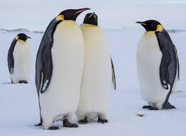

Overview
The Emperor Penguin (Aptenodytes forsteri) is the tallest and heaviest of all penguin species. It is endemic to Antarctica and is known for its remarkable adaptations to the harsh environment.
Key Facts
- Height: Up to 1.3 meters (4.3 feet).
- Weight: 22 to 45 kilograms (49 to 99 pounds).
- Diet: Primarily fish, krill, and squid.
- Habitat: Antarctic ice and surrounding waters.
Breeding and Behavior
Emperor Penguins are known for their unique breeding cycle, which occurs during the Antarctic winter. Males incubate the eggs on their feet under a flap of skin called a brood pouch while females hunt for food.